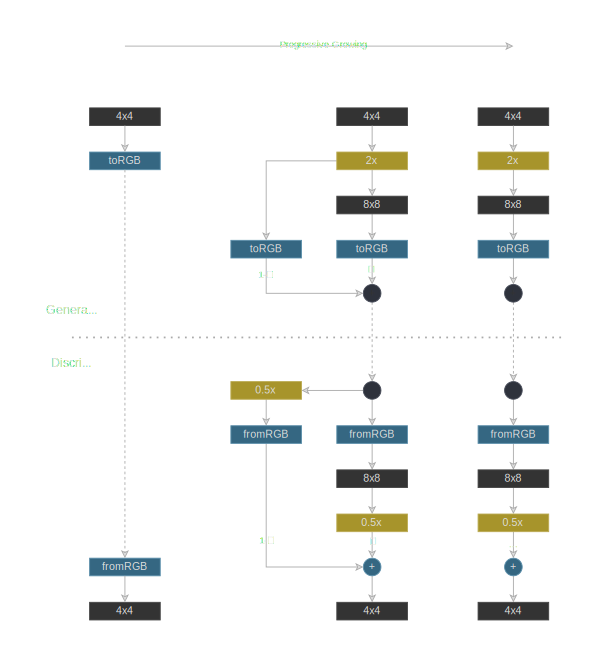
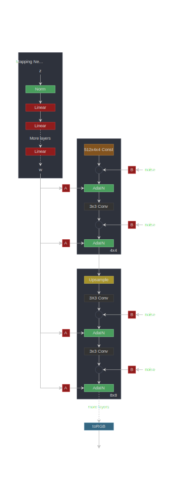
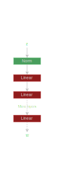
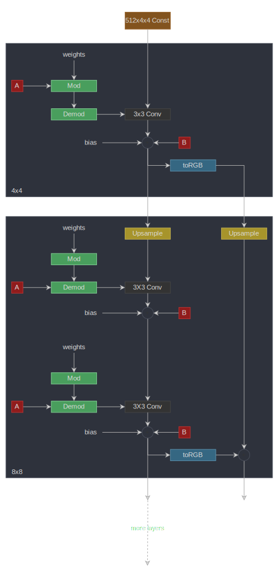
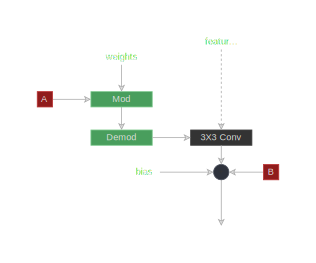
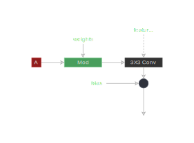
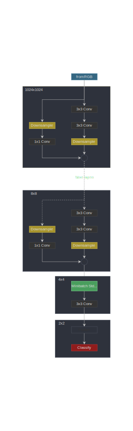
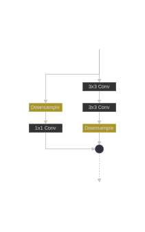

Style GAN 2
This is a PyTorch implementation of the paper Analyzing and Improving the Image Quality of StyleGAN which introduces Style GAN2. Style GAN2 is an improvement over Style GAN from the paper A Style-Based Generator Architecture for Generative Adversarial Networks. And Style GAN is based on Progressive GAN from the paper Progressive Growing of GANs for Improved Quality, Stability, and Variation. All three papers are from the same authors from NVIDIA AI.
Our implementation is a minimalistic Style GAN2 model training code. Only single GPU training is supported to keep the implementation simple. We managed to shrink it to keep it at less than 500 lines of code, including the training loop.
🏃 Here’s the training code: experiment.py.

These are $64 \times 64$ images generated after training for about 80K steps.
We’ll first introduce the three papers at a high level.
Generative Adversarial Networks
Generative adversarial networks have two components; the generator and the discriminator. The generator network takes a random latent vector ($z \in \mathcal{Z}$) and tries to generate a realistic image. The discriminator network tries to differentiate the real images from generated images. When we train the two networks together the generator starts generating images indistinguishable from real images.
Progressive GAN
Progressive GAN generates high-resolution images ($1080 \times 1080$) of size. It does so by progressively increasing the image size. First, it trains a network that produces a $4 \times 4$ image, then $8 \times 8$ , then an $16 \times 16$ image, and so on up to the desired image resolution.
At each resolution, the generator network produces an image in latent space which is converted into RGB, with a $1 \times 1$ convolution. When we progress from a lower resolution to a higher resolution (say from $4 \times 4$ to $8 \times 8$ ) we scale the latent image by $2\times$ and add a new block (two $3 \times 3$ convolution layers) and a new $1 \times 1$ layer to get RGB. The transition is done smoothly by adding a residual connection to the $2\times$ scaled $4 \times 4$ RGB image. The weight of this residual connection is slowly reduced, to let the new block take over.
The discriminator is a mirror image of the generator network. The progressive growth of the discriminator is done similarly.

$2\times$ and $0.5\times$ denote feature map resolution scaling and scaling. $4\times4$, $8\times4$, … denote feature map resolution at the generator or discriminator block. Each discriminator and generator block consists of 2 convolution layers with leaky ReLU activations.
They use minibatch standard deviation to increase variation and equalized learning rate which we discussed below in the implementation. They also use pixel-wise normalization where at each pixel the feature vector is normalized. They apply this to all the convolution layer outputs (except RGB).
Style GAN
Style GAN improves the generator of Progressive GAN keeping the discriminator architecture the same.
Mapping Network
It maps the random latent vector ($z \in \mathcal{Z}$) into a different latent space ($w \in \mathcal{W}$), with an 8-layer neural network. This gives an intermediate latent space $\mathcal{W}$ where the factors of variations are more linear (disentangled).
AdaIN
Then $w$ is transformed into two vectors (styles) per layer, $i$, $y_i = (y_{s,i}, y_{b,i}) = f_{A_i}(w)$ and used for scaling and shifting (biasing) in each layer with $\text{AdaIN}$ operator (normalize and scale):
Style Mixing
To prevent the generator from assuming adjacent styles are correlated, they randomly use different styles for different blocks. That is, they sample two latent vectors $(z_1, z_2)$ and corresponding $(w_1, w_2)$ and use $w_1$ based styles for some blocks and $w_2$ based styles for some blacks randomly.
Stochastic Variation
Noise is made available to each block which helps the generator create more realistic images. Noise is scaled per channel by a learned weight.
Bilinear Up and Down Sampling
All the up and down-sampling operations are accompanied by bilinear smoothing.

$A$ denotes a linear layer. $B$ denotes a broadcast and scaling operation (noise is a single channel). Style GAN also uses progressive growing like Progressive GAN
Style GAN 2
Style GAN 2 changes both the generator and the discriminator of Style GAN.
Weight Modulation and Demodulation
They remove the $\text{AdaIN}$ operator and replace it with the weight modulation and demodulation step. This is supposed to improve what they call droplet artifacts that are present in generated images, which are caused by the normalization in $\text{AdaIN}$ operator. Style vector per layer is calculated from $w_i \in \mathcal{W}$ as $s_i = f_{A_i}(w_i)$.
Then the convolution weights $w$ are modulated as follows. ($w$ here on refers to weights not intermediate latent space, we are sticking to the same notation as the paper.)
Then it’s demodulated by normalizing, where $i$ is the input channel, $j$ is the output channel, and $k$ is the kernel index.
Path Length Regularization
Path length regularization encourages a fixed-size step in $\mathcal{W}$ to result in a non-zero, fixed-magnitude change in the generated image.
No Progressive Growing
StyleGAN2 uses residual connections (with down-sampling) in the discriminator and skip connections in the generator with up-sampling (the RGB outputs from each layer are added - no residual connections in feature maps). They show that with experiments that the contribution of low-resolution layers is higher at beginning of the training and then high-resolution layers take over.
148import math
149from typing import Tuple, Optional, List
150
151import numpy as np
152import torch
153import torch.nn.functional as F
154import torch.utils.data
155from torch import nnMapping Network

This is an MLP with 8 linear layers. The mapping network maps the latent vector $z \in \mathcal{W}$ to an intermediate latent space $w \in \mathcal{W}$. $\mathcal{W}$ space will be disentangled from the image space where the factors of variation become more linear.
158class MappingNetwork(nn.Module):featuresis the number of features in $z$ and $w$n_layersis the number of layers in the mapping network.
172 def __init__(self, features: int, n_layers: int):177 super().__init__()Create the MLP
180 layers = []
181 for i in range(n_layers):183 layers.append(EqualizedLinear(features, features))Leaky Relu
185 layers.append(nn.LeakyReLU(negative_slope=0.2, inplace=True))
186
187 self.net = nn.Sequential(*layers)189 def forward(self, z: torch.Tensor):Normalize $z$
191 z = F.normalize(z, dim=1)Map $z$ to $w$
193 return self.net(z)StyleGAN2 Generator

$A$ denotes a linear layer. $B$ denotes a broadcast and scaling operation (noise is a single channel). toRGB also has a style modulation which is not shown in the diagram to keep it simple.
The generator starts with a learned constant. Then it has a series of blocks. The feature map resolution is doubled at each block Each block outputs an RGB image and they are scaled up and summed to get the final RGB image.
196class Generator(nn.Module):log_resolutionis the $\log_2$ of image resolutiond_latentis the dimensionality of $w$n_featuresnumber of features in the convolution layer at the highest resolution (final block)max_featuresmaximum number of features in any generator block
212 def __init__(self, log_resolution: int, d_latent: int, n_features: int = 32, max_features: int = 512):219 super().__init__()224 features = [min(max_features, n_features * (2 ** i)) for i in range(log_resolution - 2, -1, -1)]Number of generator blocks
226 self.n_blocks = len(features)Trainable $4 \times 4$ constant
229 self.initial_constant = nn.Parameter(torch.randn((1, features[0], 4, 4)))First style block for $4 \times 4$ resolution and layer to get RGB
232 self.style_block = StyleBlock(d_latent, features[0], features[0])
233 self.to_rgb = ToRGB(d_latent, features[0])Generator blocks
236 blocks = [GeneratorBlock(d_latent, features[i - 1], features[i]) for i in range(1, self.n_blocks)]
237 self.blocks = nn.ModuleList(blocks)$2 \times$ up sampling layer. The feature space is up sampled at each block
241 self.up_sample = UpSample()wis $w$. In order to mix-styles (use different $w$ for different layers), we provide a separate $w$ for each generator block. It has shape `[n_blocks, batch_size, d_latent]1.input_noiseis the noise for each block. It’s a list of pairs of noise sensors because each block (except the initial) has two noise inputs after each convolution layer (see the diagram).
243 def forward(self, w: torch.Tensor, input_noise: List[Tuple[Optional[torch.Tensor], Optional[torch.Tensor]]]):Get batch size
253 batch_size = w.shape[1]Expand the learned constant to match batch size
256 x = self.initial_constant.expand(batch_size, -1, -1, -1)The first style block
259 x = self.style_block(x, w[0], input_noise[0][1])Get first rgb image
261 rgb = self.to_rgb(x, w[0])Evaluate rest of the blocks
264 for i in range(1, self.n_blocks):Up sample the feature map
266 x = self.up_sample(x)Run it through the generator block
268 x, rgb_new = self.blocks[i - 1](x, w[i], input_noise[i])Up sample the RGB image and add to the rgb from the block
270 rgb = self.up_sample(rgb) + rgb_newReturn the final RGB image
273 return rgbGenerator Block

$A$ denotes a linear layer. $B$ denotes a broadcast and scaling operation (noise is a single channel). toRGB also has a style modulation which is not shown in the diagram to keep it simple.
The generator block consists of two style blocks ($3 \times 3$ convolutions with style modulation) and an RGB output.
276class GeneratorBlock(nn.Module):d_latentis the dimensionality of $w$in_featuresis the number of features in the input feature mapout_featuresis the number of features in the output feature map
291 def __init__(self, d_latent: int, in_features: int, out_features: int):297 super().__init__()First style block changes the feature map size to out_features
300 self.style_block1 = StyleBlock(d_latent, in_features, out_features)Second style block
302 self.style_block2 = StyleBlock(d_latent, out_features, out_features)toRGB layer
305 self.to_rgb = ToRGB(d_latent, out_features)xis the input feature map of shape[batch_size, in_features, height, width]wis $w$ with shape[batch_size, d_latent]noiseis a tuple of two noise tensors of shape[batch_size, 1, height, width]
307 def forward(self, x: torch.Tensor, w: torch.Tensor, noise: Tuple[Optional[torch.Tensor], Optional[torch.Tensor]]):First style block with first noise tensor.
The output is of shape [batch_size, out_features, height, width]
315 x = self.style_block1(x, w, noise[0])Second style block with second noise tensor.
The output is of shape [batch_size, out_features, height, width]
318 x = self.style_block2(x, w, noise[1])Get RGB image
321 rgb = self.to_rgb(x, w)Return feature map and rgb image
324 return x, rgbStyle Block

$A$ denotes a linear layer. $B$ denotes a broadcast and scaling operation (noise is single channel).
Style block has a weight modulation convolution layer.
327class StyleBlock(nn.Module):d_latentis the dimensionality of $w$in_featuresis the number of features in the input feature mapout_featuresis the number of features in the output feature map
340 def __init__(self, d_latent: int, in_features: int, out_features: int):346 super().__init__()Get style vector from $w$ (denoted by $A$ in the diagram) with an equalized learning-rate linear layer
349 self.to_style = EqualizedLinear(d_latent, in_features, bias=1.0)Weight modulated convolution layer
351 self.conv = Conv2dWeightModulate(in_features, out_features, kernel_size=3)Noise scale
353 self.scale_noise = nn.Parameter(torch.zeros(1))Bias
355 self.bias = nn.Parameter(torch.zeros(out_features))Activation function
358 self.activation = nn.LeakyReLU(0.2, True)xis the input feature map of shape[batch_size, in_features, height, width]wis $w$ with shape[batch_size, d_latent]noiseis a tensor of shape[batch_size, 1, height, width]
360 def forward(self, x: torch.Tensor, w: torch.Tensor, noise: Optional[torch.Tensor]):Get style vector $s$
367 s = self.to_style(w)Weight modulated convolution
369 x = self.conv(x, s)Scale and add noise
371 if noise is not None:
372 x = x + self.scale_noise[None, :, None, None] * noiseAdd bias and evaluate activation function
374 return self.activation(x + self.bias[None, :, None, None])To RGB

$A$ denotes a linear layer.
Generates an RGB image from a feature map using $1 \times 1$ convolution.
377class ToRGB(nn.Module):d_latentis the dimensionality of $w$featuresis the number of features in the feature map
389 def __init__(self, d_latent: int, features: int):394 super().__init__()Get style vector from $w$ (denoted by $A$ in the diagram) with an equalized learning-rate linear layer
397 self.to_style = EqualizedLinear(d_latent, features, bias=1.0)Weight modulated convolution layer without demodulation
400 self.conv = Conv2dWeightModulate(features, 3, kernel_size=1, demodulate=False)Bias
402 self.bias = nn.Parameter(torch.zeros(1))Activation function
404 self.activation = nn.LeakyReLU(0.2, True)xis the input feature map of shape[batch_size, in_features, height, width]wis $w$ with shape[batch_size, d_latent]
406 def forward(self, x: torch.Tensor, w: torch.Tensor):Get style vector $s$
412 style = self.to_style(w)Weight modulated convolution
414 x = self.conv(x, style)Add bias and evaluate activation function
416 return self.activation(x + self.bias[None, :, None, None])Convolution with Weight Modulation and Demodulation
This layer scales the convolution weights by the style vector and demodulates by normalizing it.
419class Conv2dWeightModulate(nn.Module):in_featuresis the number of features in the input feature mapout_featuresis the number of features in the output feature mapkernel_sizeis the size of the convolution kerneldemodulateis flag whether to normalize weights by its standard deviationepsis the $\epsilon$ for normalizing
426 def __init__(self, in_features: int, out_features: int, kernel_size: int,
427 demodulate: float = True, eps: float = 1e-8):435 super().__init__()Number of output features
437 self.out_features = out_featuresWhether to normalize weights
439 self.demodulate = demodulatePadding size
441 self.padding = (kernel_size - 1) // 2444 self.weight = EqualizedWeight([out_features, in_features, kernel_size, kernel_size])$\epsilon$
446 self.eps = epsxis the input feature map of shape[batch_size, in_features, height, width]sis style based scaling tensor of shape[batch_size, in_features]
448 def forward(self, x: torch.Tensor, s: torch.Tensor):Get batch size, height and width
455 b, _, h, w = x.shapeReshape the scales
458 s = s[:, None, :, None, None]460 weights = self.weight()[None, :, :, :, :]where $i$ is the input channel, $j$ is the output channel, and $k$ is the kernel index.
The result has shape [batch_size, out_features, in_features, kernel_size, kernel_size]
465 weights = weights * sDemodulate
468 if self.demodulate:470 sigma_inv = torch.rsqrt((weights ** 2).sum(dim=(2, 3, 4), keepdim=True) + self.eps)472 weights = weights * sigma_invReshape x
475 x = x.reshape(1, -1, h, w)Reshape weights
478 _, _, *ws = weights.shape
479 weights = weights.reshape(b * self.out_features, *ws)Use grouped convolution to efficiently calculate the convolution with sample wise kernel. i.e. we have a different kernel (weights) for each sample in the batch
483 x = F.conv2d(x, weights, padding=self.padding, groups=b)Reshape x to [batch_size, out_features, height, width] and return
486 return x.reshape(-1, self.out_features, h, w)Style GAN2 Discriminator

Discriminator first transforms the image to a feature map of the same resolution and then runs it through a series of blocks with residual connections. The resolution is down-sampled by $2 \times$ at each block while doubling the number of features.
489class Discriminator(nn.Module):log_resolutionis the $\log_2$ of image resolutionn_featuresnumber of features in the convolution layer at the highest resolution (first block)max_featuresmaximum number of features in any generator block
502 def __init__(self, log_resolution: int, n_features: int = 64, max_features: int = 512):508 super().__init__()Layer to convert RGB image to a feature map with n_features number of features.
511 self.from_rgb = nn.Sequential(
512 EqualizedConv2d(3, n_features, 1),
513 nn.LeakyReLU(0.2, True),
514 )519 features = [min(max_features, n_features * (2 ** i)) for i in range(log_resolution - 1)]Number of discirminator blocks
521 n_blocks = len(features) - 1Discriminator blocks
523 blocks = [DiscriminatorBlock(features[i], features[i + 1]) for i in range(n_blocks)]
524 self.blocks = nn.Sequential(*blocks)527 self.std_dev = MiniBatchStdDev()Number of features after adding the standard deviations map
529 final_features = features[-1] + 1Final $3 \times 3$ convolution layer
531 self.conv = EqualizedConv2d(final_features, final_features, 3)Final linear layer to get the classification
533 self.final = EqualizedLinear(2 * 2 * final_features, 1)xis the input image of shape[batch_size, 3, height, width]
535 def forward(self, x: torch.Tensor):Try to normalize the image (this is totally optional, but sped up the early training a little)
541 x = x - 0.5Convert from RGB
543 x = self.from_rgb(x)Run through the discriminator blocks
545 x = self.blocks(x)Calculate and append mini-batch standard deviation
548 x = self.std_dev(x)$3 \times 3$ convolution
550 x = self.conv(x)Flatten
552 x = x.reshape(x.shape[0], -1)Return the classification score
554 return self.final(x)Discriminator Block

Discriminator block consists of two $3 \times 3$ convolutions with a residual connection.
557class DiscriminatorBlock(nn.Module):in_featuresis the number of features in the input feature mapout_featuresis the number of features in the output feature map
567 def __init__(self, in_features, out_features):572 super().__init__()Down-sampling and $1 \times 1$ convolution layer for the residual connection
574 self.residual = nn.Sequential(DownSample(),
575 EqualizedConv2d(in_features, out_features, kernel_size=1))Two $3 \times 3$ convolutions
578 self.block = nn.Sequential(
579 EqualizedConv2d(in_features, in_features, kernel_size=3, padding=1),
580 nn.LeakyReLU(0.2, True),
581 EqualizedConv2d(in_features, out_features, kernel_size=3, padding=1),
582 nn.LeakyReLU(0.2, True),
583 )Down-sampling layer
586 self.down_sample = DownSample()Scaling factor $\frac{1}{\sqrt 2}$ after adding the residual
589 self.scale = 1 / math.sqrt(2)591 def forward(self, x):Get the residual connection
593 residual = self.residual(x)Convolutions
596 x = self.block(x)Down-sample
598 x = self.down_sample(x)Add the residual and scale
601 return (x + residual) * self.scaleMini-batch Standard Deviation
Mini-batch standard deviation calculates the standard deviation across a mini-batch (or a subgroups within the mini-batch) for each feature in the feature map. Then it takes the mean of all the standard deviations and appends it to the feature map as one extra feature.
604class MiniBatchStdDev(nn.Module):group_sizeis the number of samples to calculate standard deviation across.
616 def __init__(self, group_size: int = 4):620 super().__init__()
621 self.group_size = group_sizexis the feature map
623 def forward(self, x: torch.Tensor):Check if the batch size is divisible by the group size
628 assert x.shape[0] % self.group_size == 0Split the samples into groups of group_size, we flatten the feature map to a single dimension
since we want to calculate the standard deviation for each feature.
631 grouped = x.view(self.group_size, -1)Calculate the standard deviation for each feature among group_size samples
635 std = torch.sqrt(grouped.var(dim=0) + 1e-8)Get the mean standard deviation
637 std = std.mean().view(1, 1, 1, 1)Expand the standard deviation to append to the feature map
639 b, _, h, w = x.shape
640 std = std.expand(b, -1, h, w)Append (concatenate) the standard deviations to the feature map
642 return torch.cat([x, std], dim=1)Down-sample
The down-sample operation smoothens each feature channel and scale $2 \times$ using bilinear interpolation. This is based on the paper Making Convolutional Networks Shift-Invariant Again.
645class DownSample(nn.Module):656 def __init__(self):
657 super().__init__()Smoothing layer
659 self.smooth = Smooth()661 def forward(self, x: torch.Tensor):Smoothing or blurring
663 x = self.smooth(x)Scaled down
665 return F.interpolate(x, (x.shape[2] // 2, x.shape[3] // 2), mode='bilinear', align_corners=False)Up-sample
The up-sample operation scales the image up by $2 \times$ and smoothens each feature channel. This is based on the paper Making Convolutional Networks Shift-Invariant Again.
668class UpSample(nn.Module):678 def __init__(self):
679 super().__init__()Up-sampling layer
681 self.up_sample = nn.Upsample(scale_factor=2, mode='bilinear', align_corners=False)Smoothing layer
683 self.smooth = Smooth()685 def forward(self, x: torch.Tensor):Up-sample and smoothen
687 return self.smooth(self.up_sample(x))690class Smooth(nn.Module):698 def __init__(self):
699 super().__init__()Blurring kernel
701 kernel = [[1, 2, 1],
702 [2, 4, 2],
703 [1, 2, 1]]Convert the kernel to a PyTorch tensor
705 kernel = torch.tensor([[kernel]], dtype=torch.float)Normalize the kernel
707 kernel /= kernel.sum()Save kernel as a fixed parameter (no gradient updates)
709 self.kernel = nn.Parameter(kernel, requires_grad=False)Padding layer
711 self.pad = nn.ReplicationPad2d(1)713 def forward(self, x: torch.Tensor):Get shape of the input feature map
715 b, c, h, w = x.shapeReshape for smoothening
717 x = x.view(-1, 1, h, w)Add padding
720 x = self.pad(x)Smoothen (blur) with the kernel
723 x = F.conv2d(x, self.kernel)Reshape and return
726 return x.view(b, c, h, w)Learning-rate Equalized Linear Layer
This uses learning-rate equalized weights for a linear layer.
729class EqualizedLinear(nn.Module):in_featuresis the number of features in the input feature mapout_featuresis the number of features in the output feature mapbiasis the bias initialization constant
737 def __init__(self, in_features: int, out_features: int, bias: float = 0.):744 super().__init__()746 self.weight = EqualizedWeight([out_features, in_features])Bias
748 self.bias = nn.Parameter(torch.ones(out_features) * bias)750 def forward(self, x: torch.Tensor):Linear transformation
752 return F.linear(x, self.weight(), bias=self.bias)Learning-rate Equalized 2D Convolution Layer
This uses learning-rate equalized weights for a convolution layer.
755class EqualizedConv2d(nn.Module):in_featuresis the number of features in the input feature mapout_featuresis the number of features in the output feature mapkernel_sizeis the size of the convolution kernelpaddingis the padding to be added on both sides of each size dimension
763 def __init__(self, in_features: int, out_features: int,
764 kernel_size: int, padding: int = 0):771 super().__init__()Padding size
773 self.padding = padding775 self.weight = EqualizedWeight([out_features, in_features, kernel_size, kernel_size])Bias
777 self.bias = nn.Parameter(torch.ones(out_features))779 def forward(self, x: torch.Tensor):Convolution
781 return F.conv2d(x, self.weight(), bias=self.bias, padding=self.padding)Learning-rate Equalized Weights Parameter
This is based on equalized learning rate introduced in the Progressive GAN paper. Instead of initializing weights at $\mathcal{N}(0,c)$ they initialize weights to $\mathcal{N}(0, 1)$ and then multiply them by $c$ when using it.
The gradients on stored parameters $\hat{w}$ get multiplied by $c$ but this doesn’t have an affect since optimizers such as Adam normalize them by a running mean of the squared gradients.
The optimizer updates on $\hat{w}$ are proportionate to the learning rate $\lambda$. But the effective weights $w$ get updated proportionately to $c \lambda$. Without equalized learning rate, the effective weights will get updated proportionately to just $\lambda$.
So we are effectively scaling the learning rate by $c$ for these weight parameters.
784class EqualizedWeight(nn.Module):shapeis the shape of the weight parameter
804 def __init__(self, shape: List[int]):808 super().__init__()He initialization constant
811 self.c = 1 / math.sqrt(np.prod(shape[1:]))Initialize the weights with $\mathcal{N}(0, 1)$
813 self.weight = nn.Parameter(torch.randn(shape))Weight multiplication coefficient
816 def forward(self):Multiply the weights by $c$ and return
818 return self.weight * self.cGradient Penalty
This is the $R_1$ regularization penality from the paper Which Training Methods for GANs do actually Converge?.
That is we try to reduce the L2 norm of gradients of the discriminator with respect to images, for real images ($P_\mathcal{D}$).
821class GradientPenalty(nn.Module):xis $x \sim \mathcal{D}$dis $D(x)$
836 def forward(self, x: torch.Tensor, d: torch.Tensor):Get batch size
843 batch_size = x.shape[0]Calculate gradients of $D(x)$ with respect to $x$.
grad_outputs is set to $1$ since we want the gradients of $D(x)$,
and we need to create and retain graph since we have to compute gradients
with respect to weight on this loss.
849 gradients, *_ = torch.autograd.grad(outputs=d,
850 inputs=x,
851 grad_outputs=d.new_ones(d.shape),
852 create_graph=True)Reshape gradients to calculate the norm
855 gradients = gradients.reshape(batch_size, -1)Calculate the norm $\Vert \nabla_{x} D(x)^2 \Vert$
857 norm = gradients.norm(2, dim=-1)Return the loss $\Vert \nabla_x D_\psi(x)^2 \Vert$
859 return torch.mean(norm ** 2)Path Length Penalty
This regularization encourages a fixed-size step in $w$ to result in a fixed-magnitude change in the image.
where $\mathbf{J}_w$ is the Jacobian $\mathbf{J}_w = \frac{\partial g}{\partial w}$, $w$ are sampled from $w \in \mathcal{W}$ from the mapping network, and $y$ are images with noise $\mathcal{N}(0, \mathbf{I})$.
$a$ is the exponential moving average of $\Vert \mathbf{J}^\top_{w} y \Vert_2$ as the training progresses.
$\mathbf{J}^\top_{w} y$ is calculated without explicitly calculating the Jacobian using
862class PathLengthPenalty(nn.Module):betais the constant $\beta$ used to calculate the exponential moving average $a$
885 def __init__(self, beta: float):889 super().__init__()$\beta$
892 self.beta = betaNumber of steps calculated $N$
894 self.steps = nn.Parameter(torch.tensor(0.), requires_grad=False)Exponential sum of $\mathbf{J}^\top_{w} y$ where $[\mathbf{J}^\top_{w} y]_i$ is the value of it at $i$-th step of training
898 self.exp_sum_a = nn.Parameter(torch.tensor(0.), requires_grad=False)wis the batch of $w$ of shape[batch_size, d_latent]xare the generated images of shape[batch_size, 3, height, width]
900 def forward(self, w: torch.Tensor, x: torch.Tensor):Get the device
907 device = x.deviceGet number of pixels
909 image_size = x.shape[2] * x.shape[3]Calculate $y \in \mathcal{N}(0, \mathbf{I})$
911 y = torch.randn(x.shape, device=device)Calculate $\big(g(w) \cdot y \big)$ and normalize by the square root of image size. This is scaling is not mentioned in the paper but was present in their implementation.
915 output = (x * y).sum() / math.sqrt(image_size)Calculate gradients to get $\mathbf{J}^\top_{w} y$
918 gradients, *_ = torch.autograd.grad(outputs=output,
919 inputs=w,
920 grad_outputs=torch.ones(output.shape, device=device),
921 create_graph=True)Calculate L2-norm of $\mathbf{J}^\top_{w} y$
924 norm = (gradients ** 2).sum(dim=2).mean(dim=1).sqrt()Regularize after first step
927 if self.steps > 0:Calculate $a$
930 a = self.exp_sum_a / (1 - self.beta ** self.steps)Calculate the penalty
934 loss = torch.mean((norm - a) ** 2)
935 else:Return a dummy loss if we can’t calculate $a$
937 loss = norm.new_tensor(0)Calculate the mean of $\Vert \mathbf{J}^\top_{w} y \Vert_2$
940 mean = norm.mean().detach()Update exponential sum
942 self.exp_sum_a.mul_(self.beta).add_(mean, alpha=1 - self.beta)Increment $N$
944 self.steps.add_(1.)Return the penalty
947 return loss